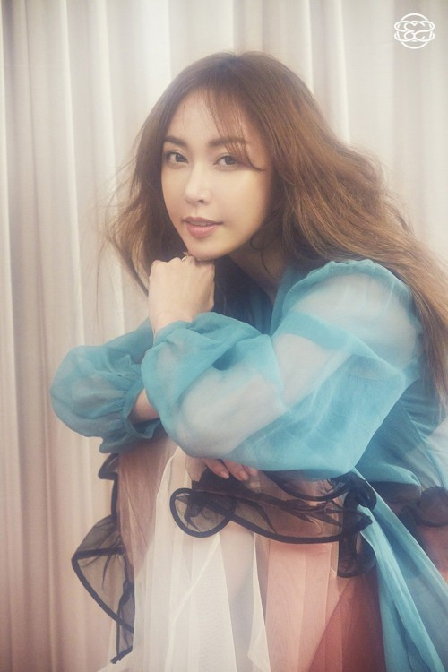

1. 소개
S.E.S.의 멤버. 한국 국적의 재일교포 출신으로 본명은 유수영. 일본 통명은 쿠니미츠 슈(邦光 洙). 1981년 10월 23일, 일본 가나가와현 요코하마시에서 태어나고 유년시절을 보냈다. 대한민국에는 15살 때부터 거주했다고 한다. 국내 최초이자 최정상의 걸그룹의 위치에 있었으며, 육아 예능 열풍으로 인해 모범적인 가정주부의 표본으로 인기와 돈 그리고 대중의 호감까지 얻었으나 후술한 사건인 2018년 걸그룹 도박의 주인공이 되어 이미지가 나락으로 추락했다.
2. 활동 내역
롯데월드에서 길거리 캐스팅되어 S.E.S.의 멤버로 발탁되었다고 한다. 당시 슈의 모습에 대해서 놀러와에서 유진이 회상한 바에 따르면, 나이는 고1이었는데 한국에서 외국인학교에 다녔던 관계로 두발제한이나 화장제한 같은 것이 없어서 굉장히 성숙해 보였다고 한다. 하지만 1집 데뷔 때 SM엔터테인먼트의 사장이었던 이수만이 무조건 어려보여야 한다고 색조가 거의 들어가지 않는(심지어 입술색도 거의 베이지색이다.) 단순한 메이크업을 지시했다고 한다.
3. 개인 영상